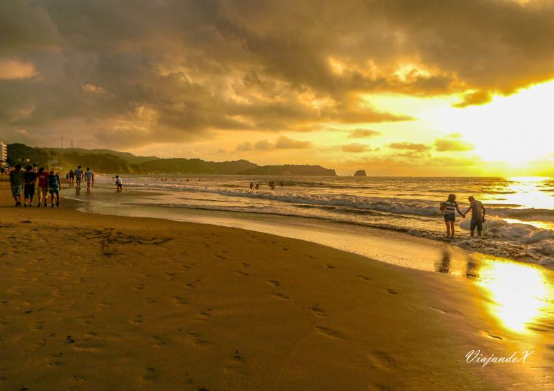
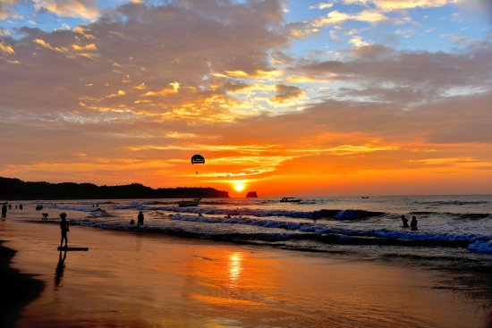

Bienvenidos a Esmeraldas
Esmeraldas, Provincia de bosques, montañas y playas, ubicada en el noroeste de Ecuador, con historias fascinante de aventuras, valentía y heroism, destino turístico que ofrece una experiencia única para los visitantes.
Atractivos Turísticos
- Playa de Atacames: Considerada una de las playas más populares del Ecuador, Atacames destaca por su extensa franja de arena, su animada vida nocturna y su variada oferta gastronómica. Es un destino ideal para quienes buscan entretenimiento, actividades acuáticas y un ambiente festivo durante todo el año.
- Playa de Las Palmas: Ubicada en la ciudad de Esmeraldas, es una extensa playa urbana de aproximadamente 5 km de longitud. Destaca por su moderno malecón, áreas recreativas, ciclovías y una amplia oferta gastronómica. Es ideal para practicar deportes de playa, disfrutar del atardecer y compartir en familia.
- Playa de Monpiche: Ubicada en el cantón Muisne, Mompiche es un pequeño paraíso rodeado de manglares y bosques tropicales. Es reconocida internacionalmente por sus excelentes olas para el surf, su ambiente bohemio y su naturaleza casi intacta. Resulta ideal para el ecoturismo y la observación de fauna marina.
- Reserva Cotacahi - Cayapas: La Reserva Ecológica Cotacachi-Cayapas es una de las áreas protegidas más importantes del país y la más grande al occidente de los Andes. Abarca ecosistemas que van desde bosques tropicales húmedos hasta páramos andinos y alberga una extraordinaria biodiversidad, incluyendo especies endémicas del Chocó ecuatoriano. Es un destino privilegiado para la investigación científica, el senderismo y el turismo de naturaleza.
- Playa de Same: Same ofrece un ambiente más tranquilo y exclusivo. Sus aguas suelen ser calmadas y su entorno natural está rodeado de colinas verdes y vegetación tropical. Es un destino perfecto para el descanso, la contemplación del paisaje y el turismo familiar.
- Playa de Súa: Situada a pocos kilómetros de Atacames, Súa es conocida por sus aguas tranquilas y su ambiente relajado. Su forma de bahía hace que el mar parezca una gran piscina natural, siendo perfecta para nadar, pasear en bote y degustar mariscos frescos en los restaurantes locales.
- Playa de Tonsupa: Tonsupa es uno de los balnearios más visitados de la costa ecuatoriana. Se caracteriza por su amplia playa de arena fina, modernas edificaciones turísticas y una vibrante vida vacacional. Es ideal para quienes buscan diversión, deportes acuáticos y alojamiento frente al mar.

